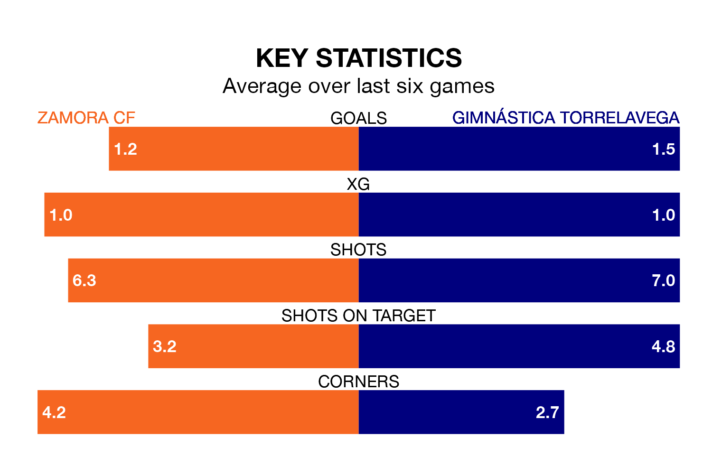

Zamora CF are heavy favourites to keep all three points at home in Sunday's late kick-off against Gimnástica Torrelavega.
Zamora, who sit third in the Segunda División RFEF Group 1 with 28 games played, are priced at 1.6 to seal victory at the Estadio Ruta de la Plata.
Sitting eight places and 20 points behind them in the table, Gimnástica Torrelavega are 5.5 to win with *Betting Company*, while the draw is at 3.4.
With 34 goals in 28 games so far this season, Gimnástica Torrelavega are scoring more than average in the league with 1.2 goals per game. But they are conceding more than average too, letting in 39 goals at a rate of 1.4 per game.
Zamora, meanwhile, are average scorers, with 1.1 goals per game. They have conceded 0.6 goals per game.
The hosts are in mixed form in the Segunda División RFEF Group 1, with two wins and three draws from their last six games.
With four wins and a draw over that period, the away side's form is better – they have taken 13 points from 18, compared to Zamora's nine.
In the last three years, Zamora and Gimnástica Torrelavega have played each other on three occasions. Gimnástica Torrelavega won one of them and they drew the other.
Their last meeting was on November 19, when Gimnástica Torrelavega won 2-1 at home.
Zamora's last match was on Sunday, a 1-0 win against Real Avilés, with Luis Miguel Luengo Herrera getting the goal for Zamora.
Gimnástica Torrelavega beat Villalbés 2-1 last time out, also on March 24, with Javier Delgado Quintana and Unai Hernández Lestón on the scoresheet.
Updated: 10:31 (UTC), 31/03/24